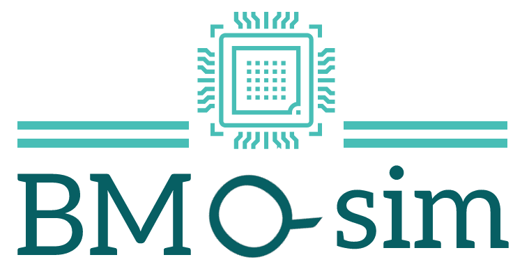

bmqsim is part of BondMachine project. It is a library and a CLI tool to produce HDL code and test benches to simulate a quantum computer on FPGA using the BondMachine architecture framework. It also provides a sotfware simulator to be used in a CPU. The installation of bmqsim is part of the standard installation of BondMachine framework. Please refer to the BondMachine quick start for the instructions.
To use the bmqsim CLI tool, you have to choose two things: the backend and the quantum algorithm to simulate.
The backend creates target hardware architecture of a specific type and its flavor (the subtype as for example the only real numbers or the complex numbers flavor) if applicable.
The quantum algorithm is a file containing the quantum circuit to simulate. Let’s begin the latter.
Once you have the quantum algorithm, you can choose the backend to use. The backend creates the target hardware architecture of a specific type and flavor. The subsequent tables show the available backend and architectures types, their flavors and the relevant command line options:
| Architecture type (backend) | Command line option | Description | Flavors |
|---|---|---|---|
Software |
--software-simulation |
Software simulator | None |
MatrixSeqHardcoded |
--build-matrix-seq-hardcoded |
Sequence of matrices hardcoded in the FPGA | seq_hardcoded_real, seq_hardcoded_complex |
MatrixSeq |
--build-matrix-seq |
Sequence of matrices in the FPGA | Not yet implemented |
FullHardwareHardcoded |
--build-full-hardware-hardcoded |
Full hardware with hardcoded matrices | Not yet implemented |
Each architecture type is associated to a different set of command line options and activates a different simulator backend. Some of the options are common to all the backends, while others are specific to a single backend. The following sections describe the options for each backend and the common options.
Alongside these main options, there are other options that does not depend on the backend chosen. These options are listed in the following table:
| Option | Description | | — | — |